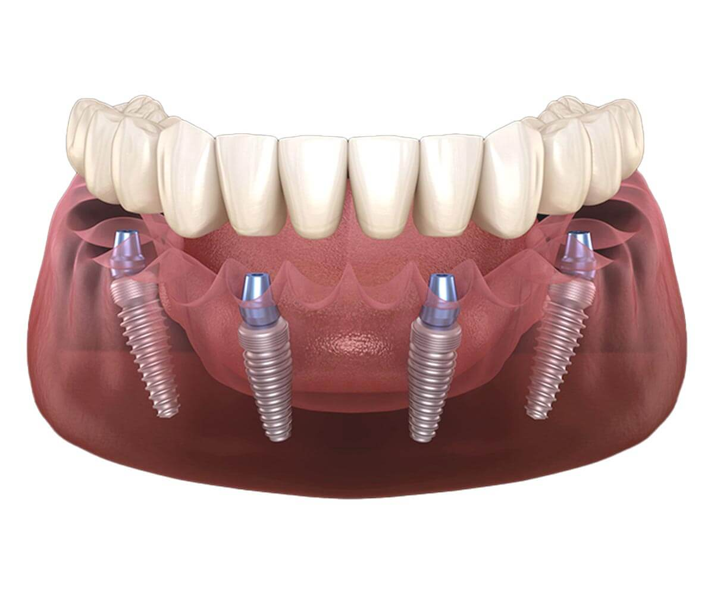
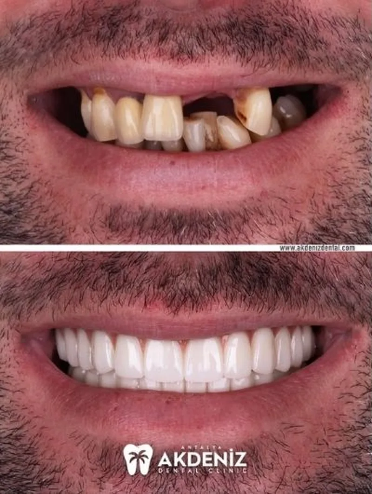

Ce sunt implanturile dentare All-on-4?
Pierderile dentare reprezintă în prezent o problemă cu care se confruntă mulți oameni. Cu toate acestea, datorită tehnologiilor dentare moderne, metodele inovatoare precum Implanturile dentare All-on-4 sunt o soluție eficientă pentru a rezolva problema pierderilor dentare.
All On Four reprezintă o soluție rapidă, eficientă şi permanentă, deopotrivă pentru pacientii care prezintă pierderi pe maxilarul inferior sau superior.
 Antalya · TurciaAll-on-4Implanturi dentareimplanturi pe maxilarpunte fixă pe întreaga arcadă
Antalya · TurciaAll-on-4Implanturi dentareimplanturi pe maxilarpunte fixă pe întreaga arcadăEtapele tratamentului All-on-4 Untersuchung und Planung:
Tehnica All On Four este o procedură aplicată pacienților care și-au pierdut toți dințiii sau care necesită extracția acestora, care nu au suficient os în maxilarului inferior și ale căror proteze dentare nu mai sunt eficiente.
În cadrul procedurii All On 4, patru implanturi sunt plasat la anumit intervale, şi grație acestei aplicații este posibilă aplicarea protezei dentare în aceeași zi.
Tratamentul All-on-4 este recomandat în special pacienților care doresc să obțină un zâmbet estetic, natural și funcțional.
Cum decurge tratamentul All-on-4 în Antalya?
Examinare şi Planificare: Primul pas include examinarea detaliată și imagistica digitală de către medicul stomatolog specialist. Se examinează tructura bucală a pacientului și se efectuează o planificare adecvată a implanturilor All-on-4.
Etapa Chirurgicală: A doua etapă este intervenția chirurgicală. Se aplică anestezie locală pe zona care se va opera. Rareori, dacă pacientul manifestă frică excesivă sau panică, se aplică sedație sau anestezie generală.
Dacă înainte de a fi plasate implanturile, pacientul prezintă dinți mobili, aceștia sunt extrași în aceași ședință. Dacă nu există niciun dinte de extras sau dacă dintele extras nu se află în zona în care vor fi amplasate implanturile, inciziile sunt facute în maxilar, în punctele corespunzătoare.
Implanturile dentare sunt plasate în osul maxilarului. Pentru durabilitate maximă, aceste implanturi sunt plasate într-un unghi drept special
Proteză Temporară: După ce sunt plasate implanturile, pacientului i se aplică o proteză dentară temporară. Această proteză susține procesul de vindecare al implanturilor și asigură pacientului continuarea normală a activităților cotidiene.
Vindecare: După ce implanturile sunt plasate, începe procesul de integrare a implanturilor in osul maxilarului. Acest proces de vindecare durează de regulă câteva săptămâni. Când vindecarea este completă, se aplică proteză dentară permanentă.
Deoarece structura maxilarului fiecărui pacient este individuală, se pregătește o proteză provizorie specială pentru maxilarul inferior și maxilarul superior, ținând cont de rezultatele măsurării. Datorită acestor proteze, pacientul nostru nu rămâne fără dinți pe parcursul tratamentului.
Protezele provizorii pregătite în prealabil (punți sau coroane) se plasează pe implanturi și se fixează.
După plasarea celor 4 implanturi dentare maxilar cu tehnica de implantare All on 4, se va așteapta aproximativ 3 luni până când țesutul osos va fuziona cu dintele înșurubat.
După 3 luni, timp în care se preconizează fuziunea, se îndepărteză protezele provizorii și se montează protezele permanente.
Tratamentul stomatologic All on 4 se completează prin montarea protezelor permanente.
Vieți transformate cu All-on-4: studii de caz
Pierderea dinților afectează nu doar zâmbetul, ci și contururile feței și încrederea în sine. Mai jos puteți vedea patru exemple diferite de transformări pe care le-am obținut cu tehnica All-on-4 la Clinica Akdeniz Dental din Antalya.
Restaurare funcțională și susținerea trăsăturilor feței

Provocare: Buze lăsate și pierderea volumului osos.
Soluție: Plasarea strategică a implanturilor și un unghi al protezei care oferă susținere buzelor.
Rezultat: Un profil dinamic și o structură facială întinerită.
Analiza cazului 1:
Obiectivul nostru principal în cazul acestui pacient a fost refacerea structurii buzelor, care se retrăseseră spre interior din cauza pierderii dinților.
Detaliu-cheie: nu doar albul dinților, ci și lungimea și unghiul acestora au fost calculate la milimetru pentru a susține linia buzelor pacientului.
Rezultat: aspectul de „față îmbătrânită” cauzat de pierderea dinților a fost înlocuit de un profil dinamic și plin.
Arhitectură estetică și armonie naturală

Provocare: Deformarea dinților existenți și alinierea neregulată a gingiei.
Soluție: Planificare digitală pentru o estetică roz optimă și alegerea materialelor.
Rezultat: Un zâmbet neted, biocompatibil, care reflectă lumina.
Analiza cazului 2:
În al doilea caz, ne-am propus să rezolvăm problema dinților deformați existenți și să stabilizăm complet arcada dentară.
Detaliu-cheie: pentru a evita impresia de „dinți artificiali”, curbele naturale ale gingiei (estetica roz) au fost combinate cu translucența porțelanului.
Rezultat: s-a obținut un design al zâmbetului natural și totodată distins, perfect adaptat trăsăturilor feței pacientului.
Aliniere geometrică și ocluzie perfectă

Provocare: Malocluzie dentară severă și o mușcătură compromisă.
Soluție: Poziționarea precisă a implanturilor pentru corectarea problemelor complexe de aliniere.
Rezultat: Aliniere geometrică impecabilă și confort funcțional.
Analiza cazului 3:
În al treilea caz, spre deosebire de celelalte, ne-am confruntat nu cu o pierdere osoasă semnificativă, ci cu o înghesuire severă și malformații ale dinților. Fotografia „înainte” de mai sus arată o structură neregulată, în care dinții se suprapun, ocluzia este compromisă, iar igienizarea devenise imposibilă. Adaptând tehnica All-on-4 la acest caz, obiectivul nostru principal a fost o „aliniere geometrică” impecabilă și o „ocluzie funcțională”.
Detaliu-cheie: dinții strâmbi existenți nu permiteau plasarea implanturilor la unghiuri ideale. Prin planificare digitală, pozițiile implanturilor au fost ajustate astfel încât puntea din porțelan fixată pe ele să rezolve complet această geometrie complexă.
Rezultat: așa cum se vede în fotografia de mai jos, forma, dimensiunea și relația fiecărui dinte cu cel alăturat au fost proiectate cu precizie matematică. Astfel nu s-a refăcut doar estetica, ci și ocluzia (mușcătura) ideală, necesară pentru ca pacientul să mestece corect.
Reabilitare cu implanturi dentare All-on-4 în Antalya

Provocare: Pierderea dimensiunii verticale, lipsa mai multor dinți frontali și un colaps structural sever care afecta înălțimea feței.
Soluție: Implanturi dentare All-on-4 cu coroane și punți realizate personalizat, pentru a reface alinierea mușcăturii, înălțimea verticală și simetria naturală a zâmbetului.
Rezultat: O structură facială complet întinerită, o susținere echilibrată a buzelor și un zâmbet tânăr, plin de încredere.
Analiza cazului 4:
Acest pacient s-a prezentat cu uzură dentară generalizată, mai mulți dinți laterali și frontali lipsă și colorații severe. Acestea au dus la o pierdere semnificativă a dimensiunii verticale, la colapsul treimii inferioare a feței (creând un profil îmbătrânit) și la o linie a zâmbetului asimetrică, din cauza căreia pacientul se simțea stânjenit.
Accentul nu a fost pus pe o simplă schimbare cosmetică superficială, ci pe o reabilitare orală completă. Aceasta a început cu stabilizarea mușcăturii și refacerea unei ocluzii corecte. Pe baza unei analize estetice și funcționale detaliate, au fost folosite soluții restaurative avansate nu doar pentru a înlocui dinții lipsă, ci și pentru a reconstrui înălțimea verticală. Culoarea și textura noilor restaurări au fost alese cu meticulozitate, pentru a fi deopotrivă vii și autentic naturale.
Detaliu-cheie: poziția și înclinarea fiecărei coroane au fost calculate cu toleranțe precise. A fost tratată și sănătatea gingiilor, asigurând o tranziție perfectă și sănătoasă între restaurări și dinții naturali păstrați. Designul general a fost armonizat cu trăsăturile existente ale pacientului, creând un cadru simetric al zâmbetului.
Rezultat: transformarea profundă se vede pe întreaga față. Profilul facial „îmbătrânit” a dispărut, fiind înlocuit de un aspect dinamic, echilibrat și întinerit. Prin refacerea susținerii verticale naturale, buzele superioară și inferioară sunt poziționate corect, iar ridurile de expresie s-au estompat. Pacientul și-a redescoperit zâmbetul și transmite o energie tânără, sănătoasă și plină de încredere.
De ce aceste cazuri sunt diferite, dar rezultatul este același?
Tehnica All-on-4 este adaptată fiecărui pacient. După cum vedeți în cele patru exemple de mai sus:
într-unul, prioritatea noastră a fost refacerea volumului facial și a susținerii buzelor,
în altul, accentul a căzut pe alinierea estetică naturală și pe armonia gingiei,
în ultimul caz, am transformat o structură extrem de complexă într-o aliniere geometrică impecabilă.
Ce au în comun toate aceste proceduri:
Succes constant: o soluție stabilă și de încredere pentru orice structură dentară și maxilară complexă.
Confort rapid: implanturi și dinți ficși provizorii într-o singură ședință.
Protecție biologică: o concepție care menține vitalitatea osului și păstrează dimensiunea verticală.
Cât costă implanturile dentare All-on-4 în Turcia?
Costul implanturilor dentare All on 4 variază în functie de tratamentul care se va aplica pacientului și de tipul de proteză folosită.
Cu toate acestea, tehnica all on four este mult mai ieftină în comparație cu metodele clasice. Deoarece turismul medical este susținut de stat, prețurile pentru implanturi dentare All on 4 în Turcia sunt mai reduse decât în țările europene.
Dacă aveți întrebări cu privire la costul All on 4, vă rugăm să contactați Clinica Dental Akdeniz.
Cât rezistă implanturile dentare All-on-4?
Longevitatea implanturilor dentare All-on-4 în Turcia sau oriunde altundeva depinde de mai mulți factori. Daca pacientul nu are o problema gravă de sănătate și implanturile sunt realizate din materiale de calitate, durata de exploatare a acestora poate fi destul de lungă. Cu o îngrijire adecvată, implanturile dentare All-on-4 pot fi utilizate în general timp de 7-10 ani.
Practicile adecvate de igienă orală joacă un rol foarte important în menținerea implanturilor. Ca și în cazul dinților naturali, este foarte important să acordați atenție rutinei de îngrijire zilnică. Neglijarea igienei bucale poate duce la probleme precum boli ale gingiilor sau infectii, care pot afecta durata de viață a implanturilor.
Controalele dentare regulate și igiena bucală corespunzătoare sunt importante pentru a asigura longevitatea implanturilor.
Este important ca pacienții să urmeze instrucțiunile post-tratament furnizate de medicul stomatolog și să împărtășească cu acesta orice probleme care pot apărea.
Cu îngrijirea și întreținerea corespunzătoare, implanturile dentare All-on-4 din Turcia oferă pacienților o soluție durabilă și eficientă.
Sunt sigure implanturile dentare All-on-4?
Una dintre metodele dovedite și eficiente de a vă îmbunătăți zâmbetul este tehnica implantului dentar All-On-4. Acest tratament este foarte important pentru asigurarea unui zambet radiant si sănătos. Această metodă, care este aplicată din 1998, a fost alegerea a sute de mii de oameni și prezintă o rată de succes impresionantă de 98%. Cu toate acestea, trebuie subliniat că această rată de succes este atinsă doar atunci când este efectuată de un medic stomatolog specialist, într-o clinică de ultimă generație.
Pentru a rezuma principalele avantaje ale metodei de implant dentar All-On-4, acestea sunt următoarele:
Simplu: Procedura presupune doar patru implanturi pe arcada dentară. Acest lucru simplifică procesul de tratament și minimizează complexitatea.
De succes: în mod surprinzător, întregul proces poate fi finalizat într-o singură zi, oferind o soluție convenabilă și rapidă pentru a-ți recupera dantura.
Benefic: Dincolo de beneficiile sale cosmetice, All-On-4 susține sănătatea și stabilitateabucală generală prin întărirea structurii maxilarului.
Testat: cu un palmares de peste două decenii, metoda All-On-4 a fost testată în timp, oferind în mod constant o rată de succes remarcabilă. Aceasta este o metodă fiabilă și eficientă de restabilire permanentă a aspectului dentar.
Este important de reținut că succesul procedurii de implanturi dentare All-On-4 depinde în mare măsură de experiența medicului stomatolog și de calitatea clinicii în care se efectuează. Alegerea unui profesionist cu experiență și a unei clinici avansate contribuie semnificativ la obținerea rezultatului dorit și la asigurarea siguranței procedurii.
Recomandăm persoanelor interesate de implanturile dentare All-On-4 în Turcia să facă un studiu temeinic și să opteze pentru o clinică dentară de renume, cu o reputație bună, lucru care va asigura realizarea procedurii All-On-4 cu succes. Din acest motiv, vă așteptăm la Clinica Dentară Akdeniz, alături de personalul nostru experimentat.
Avantajele implanturilor dentare all on 4 în Turcia
Implanturile dentare all in 4 sunt extrem de sigure și reprezintă o opțiune populară în rândul persoanelor care caută o soluție de implant dentar. Am menționat mai jos câteva dintre beneficiile tehnicii all-on-four.
- Nu deteriorează gingiile: spre deosebire de protezele dentare, implanturile All-on-4 nu exercită presiune excesivă asupra gingiilor și asigură confortul pacientului.
- Aspect permanent și natural: Implanturile dentare All-on-4 oferă o soluție permanentă și durabilă, care imită foarte fidel dinții naturali, atât ca aspect, cât și ca simț.
- Beneficii pentru sănătatea osului: prezența implanturilor în maxilar stimulează osul, prevenind degradarea ulterioară a acestuia.
- Tratament rentabil: Reducerea numărului de implanturi reduce costurile de tratament. Este o alternativă mai economică a procedurilor tradiționale de implant.
- Rapid si Eficient: Procedura asigură dinți permanenti în doar două ședințe și pacientul va beneficia de un zambet nou-nouț in scurt timp.
- Crește încrederea în sine și calitatea vieții: Transformarea rapidă a esteticii dentare permite pacienților să obțină un aspect reînnoit prin creșterea încrederii în sine și a calității generale a vieții.
- Restabilirea obiceiurilor alimentare: implanturile All-on-4 redau capacitatea de a se bucura de o varietate de alimente, permițând pacienților să consume confortabil mesele lor preferate.
- Îngrijire ușoară: Îngrijirea implanturilor dentare All-on-4 este simplă, ca și rutina de îngrijire a dinților naturali. Nu sunt necesare proceduri de întreținere suplimentare sau complicate. Îngrijirea stomatologică de rutină este suficientă.
Optând pentru tehnica All-on-4, persoanele care vizitează Akdeniz Dental beneficiază de soluții accesibile pentru nevoile lor stomatologice,
Care este diferența dintre implanturile dentare all on 4 și all on 6?
Selectarea implanturilor dentare All-on-4 și All-on-6 variază în funcție de structura maxilarului și de nevoile specifice ale pacientului. Ambele tratamente oferă soluții pentru edentatul complet, dar selectarea tratamentului depinde de unii factori.
Implanturile dentare All-on-4 sunt realizate prin plasarea a patru implanturi în osul maxilarului, în timp ce implanturile dentare All-on-6 implică șase implanturi. Deoarece ambele tehnici necesită un sprijin osos adecvat, tratamentul este determinat în funcție de rezistența maxilarului pacientului.
Implanturile All-on-4 costă în general mai puțin decât implanturile All-on-6.
Aplicațiile All-on-4 se vindecă într-un timp mai scurt. Numărul mai mic de implanturi al All-on-4 reduce timpul de vindecare. Implantul dentar All-on-4 este potrivit pentru pacienții cu volum redus al maxilarului.
Implanturile All-on-6 necesită un suport mai solid al maxilarului.
Decizia între All-on-4 și All-on-6 trebuie luată în conformitate cu recomandările medicului dentist, ținând cont de circumstanțele individuale și de avantajele menționate mai devreme. Este important ca pacienții să consulte stomatologi specialiști pentru o examinare detaliată. Numărul de implanturi utilizate afectează nu numai costul, durata tratamentului și posibilele complicații.
Ca urmare, alegerea între implanturile dentare All-on-4 și All-on-6 trebuie făcută după o examinare amănunțită de către medici stomatologi specialiști care vor evalua situația specifică a fiecărui pacient și vor determina cea mai potrivită tehnică.
Cine este pacientul ideal pentru implanturile dentare All-on-4?
Candidații ideali pentru procedura de implanturi dentare All-on-4 în Turcia sunt următorii:
Dacă pacientul are o pierdere semnificativă a dinților, pacientul poate fi eligibil pentru procedura de implant dentar All on 4. Structura maxilarului candidatului trebuie să susțină implanturi de titan.
Este o opțiune pentru pacienții care folosesc proteză sau vor avea nevoie de proteză în viitor.
Este o soluție extrem de estetică și funcțională pentru pacienții care și-au pierdut dinții din cauza impacturilor, leziunilor sau cariilor dentare. Vârsta nu este un factor limitativ pentru implanturile dentare All-on-4, atâta timp cât candidatul este sănătos.
În conformitate cu aceste criterii ale candidatului, eligibilitatea acestuia pentru implantul dentar All-on-4 este stabilită de către un medic specialist după o examinare detaliată.
Tipuri de implanturi dentare All-on-4 în Turcia
Tratamentul All-on-4 include diverse elemnte, în funcție de tehnicile utilizate. Acest tratament constă din trei elemente principale: implant, bont și coroană. Fiecare component este realizat din materiale diferite, care au propriile avantaje și dezavantaje.
Implanturi: Implanturile sunt o componentă importantă care formează punctul de atașare al dintelui sau al coroanei protetice. Ele pot fi realizate din două materiale diferite: titan și zirconiu. Deși titanul este un material care a fost folosit cu succes de mulți ani, zirconiul oferă un aspectă mai apropiat de culoarea naturală a dintelui și reduce riscul de infecție.
Bontul: Bontul este locul în care se află dinții protetici și, deoarece este realizat din aceleași materiale ca și implantul, nu există nicio problemă de compatibilitate în timpul procesului de instalare. În acest moment, utilizarea materialelor precum titanul sau zirconiul influențează succesul tratamentului.
Coroana: Coroana este partea vizibilă vizuală a aplicației All-on-4 și este plasată deasupra bontului. Materiale precum porțelanul și zirconiul sunt în general utilizate. Porțelanul oferă un aspect mai apropiată de culoarea naturală a dintelui, dar se preferă zirconiul deoarece provoacă mai puține probleme.
Selecția materialelor utilizate în implanturile dentare All-on-4 variază în funcție de factori precum nevoile individuale ale pacientului, preferințele estetice și starea generală de sănătate. Prin urmare, o evaluare detaliată împreună cu pacientul este importantă pentru a asigura cea mai adecvată selecție a materialului.
Cum se curăță implanturile dentare All-on-4?
Implanturile dentare All on Four sunt detașabile?
Procedura de implant dentar All-on-4 din Antalya se realizează prin fixarea a patru implanturi pe osul maxilarului folosind tehnica de înșurubare. Aceste implanturi servesc ca bază solidă pentru instalarea protezelor permanente. După finalizarea procesului de fixare, pacienții nu pot îndepărta singuri aceste proteze, spre deosebire de protezele tradiționale care pot fi puse și îndepărtate după bunul plac. Spre deosebire de protezele tradiționale, portabile, implanturile All-on-4 nu pot fi îndepărtate deoarece sunt fixate cu șuruburi.
Cu toate acestea, acestea pot fi îndepărtate de către medicul stomatolog în cadrul clinic, dacă este necesar.
Implanturile dentare All-on-4: o abordare revoluționară a restaurării dentare totale
Procedura de implant dentar All-on-4 este o metodă revoluționară în restaurarea completă a arcadei. Această soluție inovatoare presupune plasarea doar a patru implanturi dentare pentru a asigura o proteză fixă cu arc complet în ziua intervenției chirurgicale.
Poate că vă întrebați:„De ce implanturile dentare All-on-4 câștigă atât de multă popularitate?”
Motivul principal este faptul că oferă o alternativă mai puțin invazivă și rentabilă la metodele tradiționale de implant dentar. Mai puține implanturi înseamnă mai puțină intervenție chirurgicală și un timp de recuperare mai rapid pentru pacienți.
Dar „Pot implanturile dentare All-on-4 să înlocuiască toți dinții?
Da, implanturile dentare All-on-4 pot înlocui toți dinții lipsă fie din maxilarul superior, fie din cel inferior. Tratamentul este deosebit de benefic pentru pacienții care și-au pierdut majoritatea sau toți dinții și doresc să-și recapete o dantură completă și funcțională.